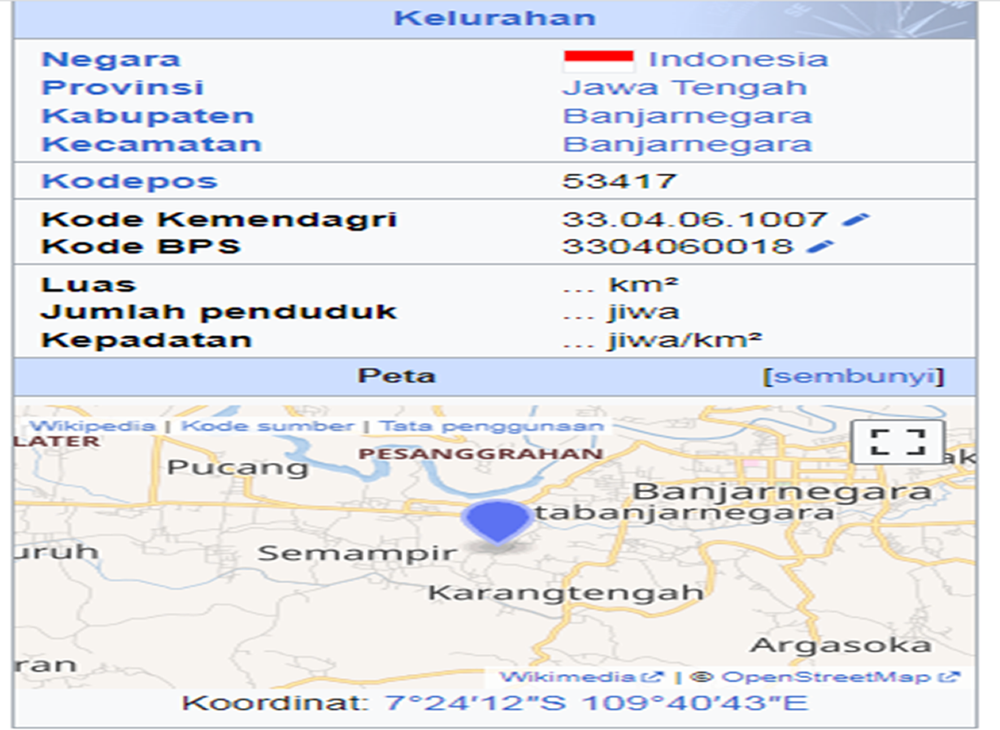
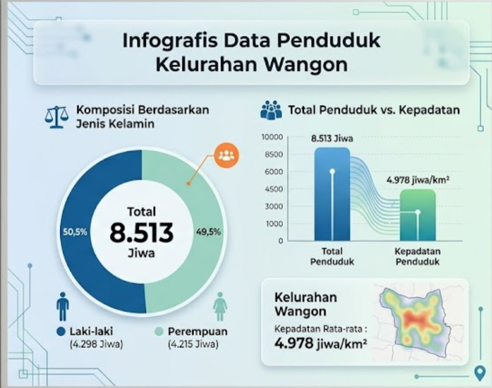

Profil Kelurahan

Visi dan Misi
Visi
"Mewujudkan Kelurahan Wangon yang Unggul, Mandiri, dan Responsif dalam Pelayanan Publik Menuju Masyarakat yang Sejahtera dan Berintegritas."
Misi
Untuk mencapai visi tersebut, misi yang diusung adalah:
- Transformasi Pelayanan Publik
- Peningkatan Infrastruktur Kelurahan
- Pemberdayaan Ekonomi Lokal (UMKM)
- Penguatan Tata Kelola Lingkungan & Sosial
- Pengembangan Sumber Daya Manusia
